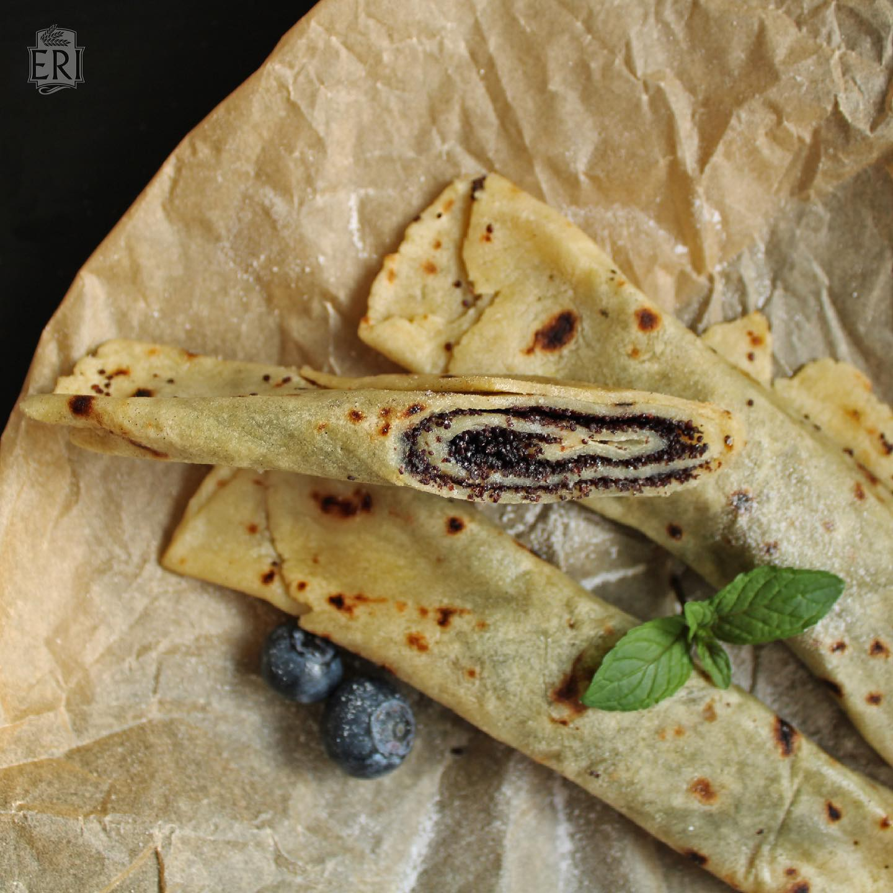

Vedeli ste, že v ponuke máme nielen samotné zemiakové lokše, ale aj lokše plnené makom? ❤️ Rýchla príprava a k tomu sú takééé chutné 🥰 #eribakery #bakery #pekaren #bakingisastory #peceniejepribeh #lokse #loksesmakom #zemiakovelokse #loksa #yummy #dnesjem #bakersofinstagram #foodie #foodstagram #foodideas #foodinspo #localfood